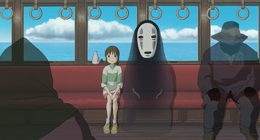

Ten-year-old Chihiro Ogino and her parents are traveling to their new home when her father decides to take a shortcut. The family's car stops in front of a tunnel leading to what appears to be an abandoned amusement park which Chihiro's father insists on exploring, despite his daughter's protest. They find a seemingly empty restaurant still stocked with food.